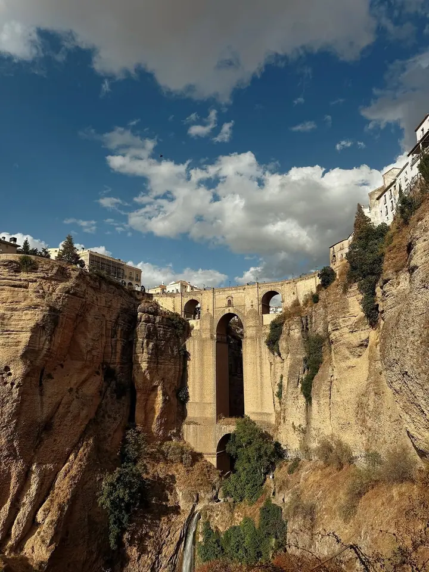

jedna
Portréty
Atmosférické portréty v měkkém světle zapadajícího slunce. Chci zachytit vás takové, jací opravdu jste, s vaší náladou a krásou.

Portrétní fotografka · Samui, Thajsko, Oděsa, Ukrajina

Jmenuji se Svetlana Sokolova a jsem portrétní fotografka z Ukrajiny. Fotím na Samui i v rodné Oděse, nejraději když se večerní světlo promění ve váš reflektor. Tohle je příběh o vás.
Více o mně
Co fotím
jedna
Atmosférické portréty v měkkém světle zapadajícího slunce. Chci zachytit vás takové, jací opravdu jste, s vaší náladou a krásou.
dvě
Focení pro páry, kde jde hlavně o skutečné emoce a blízkost mezi vámi. Nejraději ho fotím venku ve večerním světle.
tři
Uvolněné rodinné focení plné opravdových emocí a vzájemného pouta. Odnesete si z něj fotky, které uchovají ty nejteplejší vzpomínky.
Fotím lookbooky, katalogy a kampaně pro značky oblečení a doplňků. I tady mi záleží na autenticitě a atmosféře.
Váš příběh v teplém světle večera

Za objektivem
Jsem portrétní fotografka z Ukrajiny a fotím už přes 12 let. Věnuji se hlavně portrétům, love story a rodinnému focení. Vždycky hledám opravdové emoce, propojení a atmosféru.
Fotografie pro mě není jen práce. Je to způsob, jak se sblížit s lidmi a vyprávět jejich příběhy. Mám nejradši měkké světlo zapadajícího slunce, protože v něm z obyčejného večera vzniknou ty nejteplejší vzpomínky.
Kromě lidí fotím i lookbooky, katalogy a kampaně pro značky oblečení a doplňků. Žiji mezi thajským ostrovem Samui a Oděsou. Pokud vám můj styl sedí, napište mi e-mail nebo zprávu na Instagramu, moc ráda se ozvu.
Svetlana
Ozvěte se mi e-mailem nebo přes Instagram a napište, jaké focení si představujete.
Společně vybereme místo a čas. Nejčastěji plánuji focení na západ slunce, kdy je světlo nejměkčí.
Fotíme v klidu a bez spěchu. Nechám vás být sami sebou a hledám chvíle, které jsou opravdové.
Fotky pečlivě vyberu a upravím tak, aby si zachovaly atmosféru a náladu celého večera.
Portfolio
Fotografie jsou ilustrační
Otázky
Žiji a fotím na ostrově Samui v Thajsku a v Oděse na Ukrajině. Pokud vás zajímá jiné místo, napište mi a domluvíme se.
Nejraději fotím při západu slunce. Měkké teplé světlo je pro portréty i páry nejlichotivější a fotky z něj mají krásnou atmosféru.
Ano, fotím lookbooky, katalogy a kampaně pro značky oblečení a doplňků. I v nich se snažím o autenticitu a náladu.
Cena záleží na typu focení a místě. Napište mi, co si představujete, a pošlu vám nabídku.
Napište pár vět o tom, co si představujete. ssvetasokolova@gmail.com